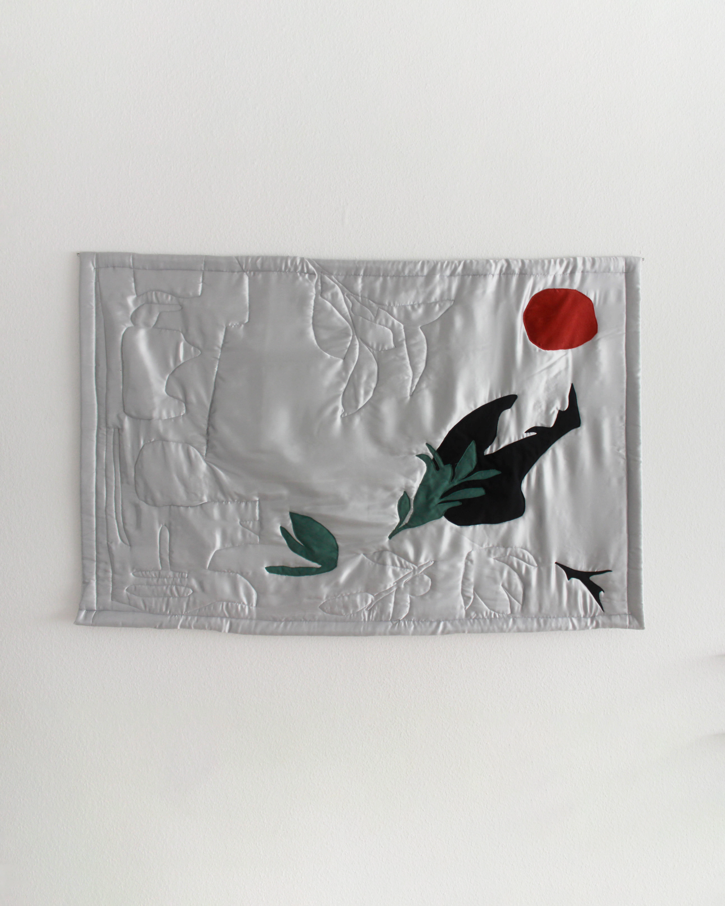
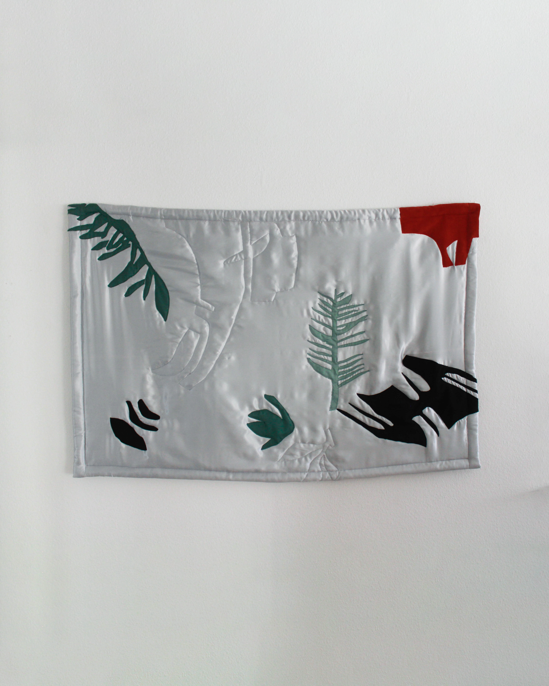
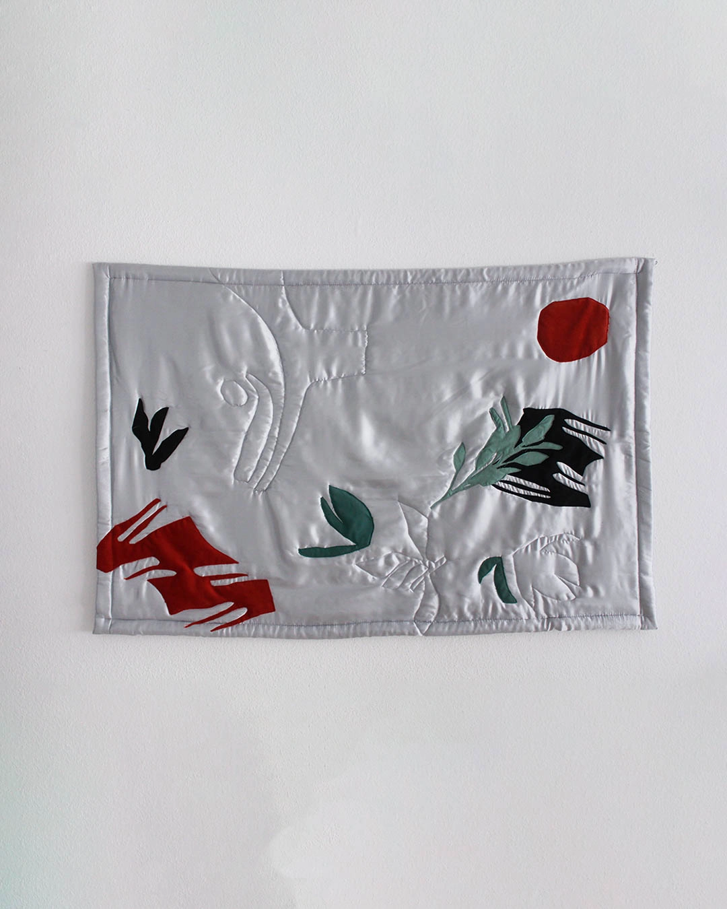

But the sun knows everything there is to know
2025Hope; if it was possible to think a word that way, if it was possible that something confusing she could not yet grasp, could materialize under a notion of hope, it was just too idiotic, it was incredibly beautiful and now it was going away. It was impossible to understand all that, as it always was with something so necessary to be understood.


